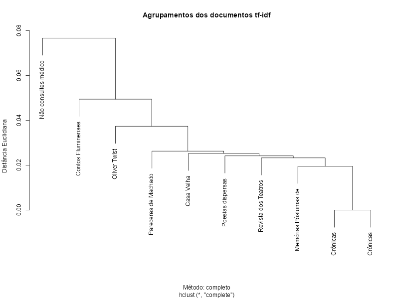

# instala pacotes
install.packages('quanteda')
install.packages('quanteda.textplots')
install.packages("stopwords")
install.packages('openxlsx')
# carrega pacotes
library(quanteda)
library(quanteda.textplots)
library(openxlsx)
library(stopwords)
library(stringr)
# exibição de números decimais
options(scipen=9999)
# carrega coleção
obras <- read.xlsx('machado.xlsx')
# seleciona 10 obras aleatoriamente
obras <- obras[sample(1:nrow(obras),10,replace=TRUE),]
# converte para minúsculas
obras$texto <- char_tolower(obras$texto)
# tokeniza documento
obras.tokens <- tokens(
# limites: palavras
obras$texto,what="word",
# remove pontuação
remove_punct=TRUE
)
# remove stopwords da coleção
obras.tokens <- tokens_select(obras.tokens, selection="remove", pattern=stopwords("pt"))
# cria matriz de frequências dos documentos (dfm)
obras.dfm <- dfm(obras.tokens)
# tf-idf
obras.tfidf <- dfm_tfidf(
# seleciona dfm
obras.dfm,
# esquema: tf*idf
scheme_tf = "prop"
)
# cria agrupamentos
clusters <- hclust(
# distância euclidiana
dist(obras.tfidf, method="euclidean"),
# método: completo (encontra mais similares)
method="complete"
)
# rótulo dos clusters com até 20 caracteres
clusters$labels <- substr(obras$titulo,1,20)
# plota agrupamentos
plot(
clusters,
# título do gráfico
main="Agrupamentos dos documentos tf-idf",
ylab="Distância Euclidiana",
xlab="Método: completo",
# agrupamentos
)Warning: package ‘quanteda’ is in use and will not be installed
Warning: package ‘quanteda.textplots’ is in use and will not be installed
Warning: package ‘stopwords’ is in use and will not be installed
Warning: package ‘openxlsx’ is in use and will not be installed